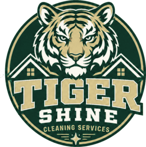
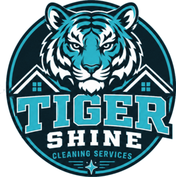

Palette directions for a tiger
Your existing artwork, recoloured six ways. These are approximations — a real redesign would also adjust the linework (a white tiger needs different stripe rendering, for instance). But they're accurate enough to judge direction. View on your phone too, and squint: if it still reads at a glance, it'll work on a yard sign.

White Tiger
Silver + slate + whiteWhite tigers are real, rare, and striking. "Shine" and "white" belong together — this is the most on-name option here.
Strongest concept fit. Reads clean and premium. Almost nobody in home services looks like this.
Coldest option — no local warmth. Silver-on-light needs care so it doesn't wash out.

Gold & Black
Amber + near-blackStill unmistakably a tiger, but expensive-looking rather than sporty. Gold and warm-white Christmas lights are a natural match.
Premium feel lets you quote higher. Superb for the holiday side of the business.
Reads a little collegiate too (Missouri, Purdue). Gold needs a dark background or it turns muddy.

Hunter Green & Cream
Deep green + antique goldReads established and Southern-residential — the palette of lawn care and country clubs. Suggests care for the property, not just the concrete.
Very distinctive in cleaning, where everyone is blue. Signals gentle-on-plants, which matters to homeowners.
Least "tiger" of the six. Could be mistaken for a landscaping company.

Deep Teal & Coral
Teal + warm coralTeal says water without a word of copy. Coral keeps the tiger warm while sitting far enough from orange to not be mistaken for it.
Highest contrast pair here — best legibility on signs and shirts. Nobody local is using it.
Teal is still technically in the blue family, so it's the smallest step away from your competitor.

Ice & Slate
Bright cyan + deep slateThe cold, high-pressure-water read. Cyan on near-black is unmistakably about cleaning.
Most obviously "pressure washing" of the six. Very modern.
Cyan can drift toward tech-startup or pool service. Weakest fit for Christmas lights.

Hi-Vis & Charcoal
Safety lime + charcoalBorrowed from work gear and safety wear. Loud, modern, and impossible to miss from a car.
Best roadside legibility of anything here. Doubles as actual hi-vis on crew shirts.
Can read cheap if the print quality is poor. Wrong tone for high-end neighbourhoods.
Two colours to avoid in Alabama: crimson with white reads as Alabama, and orange with navy reads as Auburn — which is how you ended up matching a competitor in the first place. Both split your audience along lines that have nothing to do with clean concrete. Everything above sidesteps that.